ЦЕНТР БРЕНДА
Все о бренде
Группы «Эталон»
Правила фирменного стиля, логотипы, цвета, шрифты и готовые материалы — в одном месте.
01ОСНОВА БРЕНДА
Логотип
Используйте только оригинальные файлы. Не меняйте пропорции, цвет и расстояние между элементами.
Скачать все версииАрхив со всеми цветами
ПРАВИЛА ИСПОЛЬЗОВАНИЯ
Охранное поле
Минимальное свободное пространство вокруг логотипа равно высоте буквы «О». Логотип должен оставаться контрастным и легко читаемым.
Не допускается
- Искажать пропорции
- Менять фирменные цвета
- Добавлять тени и эффекты
- Поворачивать или наклонять
02ВИЗУАЛЬНЫЙ ЯЗЫК
Палитра
Синий — основной цвет бренда. Оранжевый применяется только как акцент.
03ШРИФТ
Gilroy
Gilroy Medium используется для заголовков и акцентов, Gilroy Regular — для основного текста. В качестве замены применяется стандартный системный шрифт.
Аа
Аа Бб Вв Гг Дд Ее Жж Зз Ии Йй Кк Лл Мм Нн Оо Пп Рр Сс Тт Уу Фф Хх Цц Чч Шш Щщ
Gilroy Medium · 56Создаем
Создаем
пространство
для жизни
Gilroy Regular · 18
Группа «Эталон» — одна из крупнейших компаний в сфере девелопмента и строительства в России. Фирменная типографика помогает сохранять ясность и узнаваемость во всех коммуникациях.
Скачать шрифтАрхив со всеми начертаниями

ЦЕНТР ЗАГРУЗОК
Материалы бренда
Основные файлы для работы с брендом.